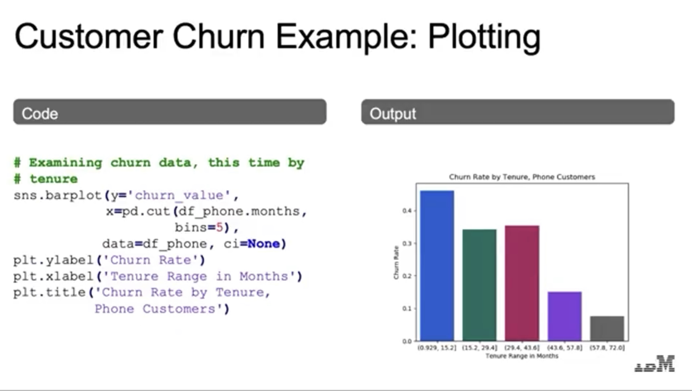
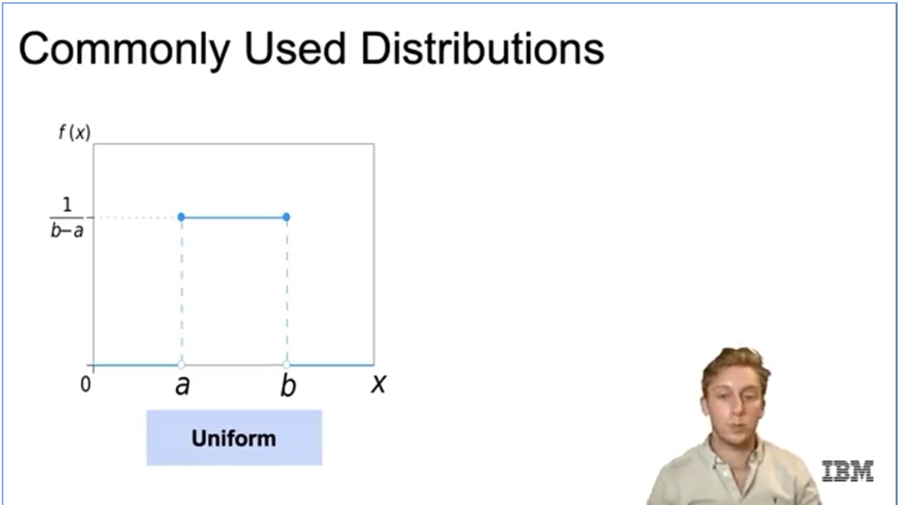

Content:
Overview of the course: introduction to AI, ML, DL, and techniques within the field to make the most out of clean data.
Artificial Intelligence: A program that can sense, reason, act and adapt.
An AI that does not fall into the subset of ML is exemplified by rule based AI.
Machine Learning: A subset of AI; algorithms whose performance improve as they are exposed to more data over time.
The study and construction of programs that are not explicitly programed, but learn patterns aas they are exposed to more data over time.
Features: attributes of the data
Target: column to be predicted
Idea is to use features to predict the target
Supervised Learning: Data- has target column | Goal- make prediction | Example- fraud detection
Unsupervised Learning: Data- does not have target column | Goal- find structure in the data | Example- Customer Segmentation
Deep Learning: A subset of ML: in which multilayered neural networks learn from vasts amount of data.
Machine learning that involves using very complicated models called "deep neural networks." Models determine best representation of original data; in classic machine learning humans must do this.
ML: Step 1- determine features Step 2- Feed them through model Step 3- Predict target
DL: steps 1 and 2 are combined into 1 step
Early Algorithms -> Expert Systems -> Neural Networks -> Machine Learning -> Deep Learning
1950s: Alan Turing developed the Turing Test; to test a machine's ability to exhibit intelligent behavior.
1956: Artificial Intelligence was accepted as a field at the Dartmouth Conference.
1957: Frank Rosenblatt invented to the perceptron. This was the precursor to the modern neural network.
1959: Arthur Samuel published an algorithm for a checkers program using machine learning.
1966: ALPAC committee evaluated AI techniques for machine translation and determined there was little yield from investment.
1973: The Lighthill report highlighted AI's failure to live up to promises.
1980s: Expert Systems with programmed rules designed to mimic human experts. Ran on mainframe computers with specialized languages(e.g LISP). Were the first widely used AI tech with 2/3 of "Fortune 500" companies using them at their peak.
1986: The "Backpropagation" algorithm was able to train multi-layer perceptrons, leading to new successes and interest in neural network research.
1990s: Expert systems progress on solving business problems slowed. Expert systems began to be melded into software suites(SAP, Oracle) that could be run onf PCs instead of mainframes. Neural networks didn't scale to large problems.
1990s-2000s: AI solutions had successes in speech recognition, medical diagnosis, robotics, and many other areas. The Deep Blue chess system beat world chess champion Garry Kasparov. Google's search engine launched using their page rank algorithm.
2006: Geoffrey Hinton publishes a paper on unsupervised pre-training that allowed deeper neural networks to be trained.
2009: the ImageNet database of human-tagged images is presented at the CVPR conference.
2010: Algorithms compete on several visual recognition tasks at the first ImageNet competition.
2012: Deep learning beats previous benchmark on the ImageNet competition.
2014: Stanford team creates computer vision algorithm that can describe photos.
2015: Deep learning platform TensorFlow is developed.
2019: IBM Project Debater is able to have a full debate with rebuttal with champion human debater.
Two Large Trends: Computer Vision- self driving cars(object detection) & healthcare(improved diagnosis) and Natural Language Processing- communication(language translation).
We now have bigger datasets, faster computers and large neural nets.
Health: enhanced diagnostics, drug discovery, patient care, research, sensory aids
Industrial: factory automation, preventative maintenance, precision agriculture, field automation
Finance: algorithmic trading, fraud detection, research, personal finance, risk mitigation
Energy: oil and gas, smart grid, operational improvement, conservation
Government: defense, data insights, safety & security, engagement, smarter cities
Transportation: autonomous cars, automated trucking, aerospace, shipping, search & rescue
Misc: advertising, education, gaming, professional & IT services, telco/media, sports
Problem Statement: What problem are you tring to solve? Data Collection: What data do you need to solve it? Data Exploration & Preprocessing: How should you clean your data so your model can use it? Modeling: Build a model to sole your problem? Validation: Did I solve the problem? Decision Making & Deployment: Communicate to stakeholders or put into production?
Target Variable: category or value that we are trying to predict
Feature Variable: properties of the data used for prediction(explanatory variables)
Example: a single data point within the data(one row)
Label: the target value for a single data point
Comma-Separated Values(CSV) files consist of rows of data, separated by commas. In Pandas CSV files can typically be read using just a few lines of code:
import pandas as pd
filepath = 'data/iris_data.csv'
# Import the Data
data = pd.read_csv(filepath)
# Print a few rows
print(data.iloc[:5])
# Different delimeters - tab-separated file(.tsv)
data = pd.read_csv(filepath, sep='\t')
# Different delimiters - space-separated file
data = pd.read_csv(filepath, delim_whitespace=True)
# Don't use first row for column names
data = pd.read_csv(filepath, header=None)
# Specify column names
data = pd.read_csv(filepath, names=['Name1', 'Name2'])
# Custom missing values
data = pd.read_csv(filepath, na_values=['NA', 99])
JavaScript Object Notation(JSON) files are a standard way to store data across platforms. JSON files are very similar in structure to Python dictionaries. Reading JSON files into Python:
import pandas as pd
filepath = 'data/iris_data.csv'
# Read JSON file as dataframe
data = pd.read_json(filepath)
# Write dataframe file to JSON
data.to_json('outputfile.json')
Structured Query Language(SQL) represents a set of relational datbases with fixed schemas. There are many types of SQL databases which function similarly: Microsoft SQL Server, Postgres, MySQL, AWS Redshift, Oracle DB, DB2 Family, etc.
Reading SQL databases using sqlite3 package:
# SQL Data Imports
import sqlite3 as sq3
import pandas as pd
# Initialize path to SQLite database
path = 'data/classic_rock.db'
# Connect to SQLite database
con = sq3.Connection(path)
# Write Query
query = ''' SELECT * FROM rock-songs;
'''
# Execute Query
data = pd.read_sql(query, con)
Not-Only SQL(NoSQL) databases are not relational, vary more in structure. Depending on application, may perform more quickly of reduce technical overhead. Most NoSQL databases store data in JSON format. Examples of NoSQL Databases: document databases(mongoDB), Key-value stores(Riak), Graph databases(Neo4j), Wide-column stores(Cassandra).
Reading NoSQL databases using pymongodb:
# SQL Data Imports
from pymongo import MongoClient
import pandas as pd
# Create a Mongo connection
con = MongoClient( #path )
#Choose database (con.list_database_names() to see available databases)
db = con.database_name
# Create a cursor object using a query
cursor = db.collection_name.find(query) # query should be replaced with a MongoDB query string or {} to select all
# Expand cursor and construct Dataframe
df = pd.DataFrame(list(cursor))
A variety of providers make data available via Application Programming Interfaces (APIs) that make it easy to access such data via Python.
Reading in data from UCI ML library:
import pandas as pd
# UCI Cars data set - url location
data_url = 'https://archive.ics.uci.edu/ml/machine-learning-databases/car/car.data'
# Read data into Pandas
df = pd.read_csv(data_url, header=None)
Messy data can lead to "garbage_in", "garbage-out" effect, and unreliable outcomes.
Key Aspects of Machine Learning depend on cleaned data:
Observations: an instance of the data(usually a point or row in a dataset)
Labels: Output variables being predicted
Algorithms: computer programs that estimate models based on available data
Features: information we have for each observation
Model: hypothesized relationship between observations and data
Main data problems: lack of data, too much data, and bad data.
Messy Data: duplicate or unnecessary data, inconsistent text and typos, outliers, data sourcing issues(multiple systems, different db types, on premise vs cloud, etc.), and missing data.
Handling Messy Data:
Duplicate Values: pay attention, research why there are multiple values. Filter the data as necessary.
Missing Data: remove the data(e.g. remove rows/cols with missing data)-- quickly cleans data set but can cause dependency issues for rows/cols or impute the data(e.g. replace with mean value)-- we don't loose full rows or columns but we add another level of uncertainty for the model or mask the data(e.g. create a category for missing values)-- we don't loose any rows/cols but we add another level of uncertainty/assumption.
Outliers: find outlines by plots(histogram, density plots, etc.) or statistics(interquartile range, standard deviation, etc.) or by residuals(standardized, deleted, studentized, etc.). Digest the information the outlier provides. Remove the outliers or replace them with the mean value or transform the variable or predict what the value should be or keep but focus on models that are resistant to outliers.
There are many ways to discover correlation between the target variable and the rest of the features. Building pair plots, scatter plots, heat maps, and a correlation matrixes are the most common ones. Below, we will use the corr() function to list the top features based on the pearson correlation coefficient (measures how closely two sequences of numbers are correlated).
Exploratory Data Analysis: is an approach to analyzing data sets to summarize their main characteristics, often with visual methods. EDA allows us to get an initial feel for the data. Determines if the data makes sense. EDA helps us identify patterns and trends in the data.
Summary Statistics: mean, median, min, max, correlations, etc.
Visualizations: histograms, scatter plots, box plots, etc.
Data Wrangling: pandas library
Visualization: matplotlib, seaborn
For large data, a random sample can make computation easier.
We may want to train models on a random sample of the data
We may want to over- or under-sample observations when outcomes are uneven.
Visualizations can be created in multiple ways:
Matplotlib:
# Basic Scatter Plots with Matplotlib
import matplotlib.pyplot as plt
plt.plot(x-axis(e.g. data.col1), y-axis(e.g. data.col2), ls='', marker='o')
# Multiple Layers Scatter Plots with Matplotlib
import matplotlib.pyplot as plt
plt.plot(x-axis(e.g. data.col1), y-axis(e.g. data.col2), ls='', marker='o', label='label1')
plt.plot(x-axis(e.g. data.col1), y-axis(e.g. data.col2), ls='', marker='o', label='label2')
plt.legend
# Histograms
plt.hist(data(e.g. data.col1), bins= number of bins(e.g. 12))
# Customizing Plots
Pandas:
# Customizing Plots: by Group
Seaborn:
Feature Engineering: A critical part of the successful Machine Learning project is coming up with a good set of features to train on. It involves three steps: feature transformation (transforming the original features), feature selection (selecting the most useful features to train on), and feature extraction (combining existing features to produce more useful ones).
Variable Selection Background: Involves choosing the set of features to include in the model.
Variable Transformation Background: Models used in ML Workflows often make assumptions about the data. Variables must often be transformed before they can be included in models: log, polynomial, scaling, encoding. A common example is the linear regression model. This assumes a linear relationship between observations and target variables.
Example:
Predictions from linear regression models assume residuals are normally distributed. Features and predicted data are often skewed. Data transformations can solve this issue.
Encoding:
Intro:
Often applied to categorical features that take non-numeric values.
Types of Features:
Nominal: categorical variable take values in unordered categories(e.g. red, blue, green; True, Fales)
Ordinal: categorical variables take values in ordered categories(e.g. High, Medium, Low)
Approach:
Binary Encoding: converts variables to either 0 or 1 and is suitable for variables that take two possible values(e.g. True, Fals)
One-Hot Encoding: converts variables that take multiple values into binary (0,1) variables, one for each category. This creates several new variables.
Ordinal Encoding: involves converting ordered categories to numerical values, usually by creating one variable that takes integer equal to the number of categories(e.g. 0,1,2,...)
Feature Scaling:
Intro:
Involves adjusting variable's scale. This allows comparison of variables with different scales. Different continuous features often have different scales.
Approach:
Standard Scaling: converts features to standard normal variables. This is done by subtracting the mean and divided by the standard error).
Min-Max Scaling: converts variables to continuous variables in the (0,1) interval by mapping the minimum values to 0 and the maximum values to 1. This is done by subtracting the min value from the column and dividing by the (max value - min value). This type of scaling is sensitive to outliers.
Robust Scaling: is similiar to min-max scaling, but instead maps the interquartile range(the 75th percentile value minus the 25th percentile value) to (0,1). This means the variable itself takes the values outside of the (0,1) interval.
Common Variable Transformations in Python:
Estimation: is the application of an algorithm, for example taking an average(X̄ = Σ xi/n where i = 1 to n)
Inference: involves putting an accuracy on the estimate for example finding the standard error of an average(σ = (Σ (xi - X̄)^2 / (n - 1))^(1/2) where i = 1 to n
Machine learning and statistical inference are similar. In both we're using data to learn/infer qualities of a distribution that generate the data(often termed the data=generating process). We may care either about the whole distribution of just features(e.g. mean). Machine learning application that focus on understanding parameters and individual effects involve more tools from statistical inference.
Example:

If inference is about trying to find out the Data-Generating Process(DGP), then we can say that a statistical model(of the data) is a set of possible distributions or maybe even regressions.
Parametric Model: A particular type of the statistical model: it's also a set of distributions or regressions, but they have a finite number of parameters. Example: the Normal Distribution.
Non-Parametric Model: Fewer assumptions are made. In particular we don't assume that the data belong to any particular distribution(aka distribution-free inference). Example: Cumulative Distribution Function using a histogram.
Example:


Frequentist:
Concerned with repeated observations in the limit.
Processes may have true frequencies, but we're interest in modeling probabilities as many many repeats of an experiment.
Approach: Derive the probabilistic property of a procedure, apply the probability directly to the observed data
Bayesian:
Concerned with describing parameters by probability distributions.
Before seeing any data, a prior distribution(based on experimenters' belief) is formulated. This prior distribution is then updated after seeing the data. After updating the distribution is called the posterior distribution.
We use much of the same math and same formulas in both Frequentist and Bayesian statistics. The element that differs is the interpretation-- are we estimating how likely we are to actually cover the population mean or are we coming up with a distribution for that population mean.
Hypothesis: A statement about a population parameter.
We create two hypotheses: Null Hypothesis(H0) and Alternative Hypothesis(H1 or HA). We decide whinc one to call the null depending on how the problem is setup.
A hypothesis testing procedure gives us a rule to decide: for which values of the test statistic do we accept H0 and for which values of the test statistic do we reject H0 and accept HA.
The likelihood ratio is called a test statistic: we use it to decide whether to accept/reject H0.
The rejection region: is the set of values of the test statistic that lead to rejection of H0.
The acceptance region: is the set of values of the test statistic that lead to acceptance of h0.
The null distribution: is the test statistic's distribution when the null is true.
A hypothesis testing procedure in the Bayesian interpretation we don't get a decision boundary, instead we get updated posterior probabilities.
Example:

Type 1 Error: Incorrectly rejecting the null hypothesis.
Type 2 Error: Incorrectly accepting the null hypothesis.
We know the distribution of the null hypothesis. To get a rejection region, we calculate the test statistic. We will choose, before testing the data, the level at which we will reject the null hypothesis.
Significance Level(α): A probability threshold below which the null hypothesis will be rejected. We must choose an α before computing the test statistic. If we don't we might be accused of p-hacking.
P-value: The smallest significance level at which the null hypothesis would be rejected.
Confidence Interval: the values of the statistic for which we accept the null.
If two variables X and Y are correlated, then X is useful for predicting Y. If we are trying to model Y, and we find things that correlate with Y, we may improve the modeling. We should be careful about changing X with the hope of changing Y.
X and Y can be correlated for different reasons:
X causes Y(what we want)
Y causes X(mixing up cause and effect)
X and Y are both caused by something else(confounding)
X and Y are related, we just got unlucky in the sample(spurious)
Confounding Variable: A variable that causes both X and Y to change. X and Y are correlated even though X doesn't cause Y and Y doesn't cause X.
Model: a small thing that captures a larger thing; a good model omits unimportant details while retaining what's important.
Modeling Best Practices:
Use Cost Function to fit model
Develope multiple models
Compare results and choose best one
Supervised: data points have a known outcome
Unsupervised: data points have a unknown outcome
Semi-Supervised: uses both: data with outcomes, data without outcomes
Approach Methodology:
Types of Supervised Learning: regression(outcome is continuous), classification(outcome is categorical)
SST(TSS): The sum of squares total, denoted SST, is the squared differences between the observed dependent variable and its mean. You can think of this as the dispersion of the observed variables around the mean – much like the variance in descriptive statistics.
SSR(ESS): The second term is the sum of squares due to regression, or SSR. It is the sum of the differences between the predicted value and the mean of the dependent variable. Think of it as a measure that describes how well our line fits the data. If this value of SSR is equal to the sum of squares total, it means our regression model captures all the observed variability and is perfect.
SSE(RSS): The last term is the sum of squares error, or SSE. The error is the difference between the observed value and the predicted value. We usually want to minimize the error. The smaller the error, the better the estimation power of the regression.
Training Data: fit the model
Test Data: measure performance
See notebook for example.
Split into multiple training and test splits with no overlap in the test splits.(e.g. train_data1, train_data2, validation_data1, validation_data2).


Three Sources of Model Error:
being wrong-- bias: tendency of predictions to miss true values, worsened by missing information, overly simplistic assumptions, miss real patterns.
being unstable-- variance: tendency of predictions to fluctuate, characterized by sensitivity or output to small changes in input data, often due to overly complex or poorly fit models.
unavoidable randomness-- irreducible error: tendency to intrinsic uncertainty/randomness, present in even the best models.


Why is Feature Selection Important?
Reducing the number of features can prevent overfitting.
For some models, fewer features can improve fitting time and/or results.
Identifying most critical features can improve model interpretability.
Further Detail:
Analytical View: Increasing L2/L1 penalties force coefficients to be smaller, restricting their plausible range. A smaller range for coefficients must be simpler/lower variance than a model with an infinite possible coefficient range.
Geometric View:


Probabilistic View:


Recap:

How it works:
Analytically: penalty constrains the coefficient range
Geometrically: L1/L2 imposes bounded regions
Probabilistically: imposes prior on coefficients


What is needed for Classification?
Model data with features that can be quantified and labels that are known.
Method to measure similarity
Types of Classification: Logistic Regression, K-Nearest Neighbors, Support Vector Machines, Neural networks, Decision Trees, Random Forests, Boosting, Ensemble Models


Bagging:


Random Forest:


Boosting:


Stacking:


Self Interpretable Model: simple structure, ideal for high risk situations-- finance, healthcare, etc. Examples: linear models, decision trees, and K-nearest neighbors.
Non-Self Interpretable Model: complex structure, ideal for state of the art performance for current problems-- language processing, traffic predictions, etc. Examples: ensemble models, SVMs, and neural networks.
Model Interpretation Methods:
Intrinsic: for models with high interpretability, simplify models to increase interpretability.
Post-hoc: for models with low interpretability, auxiliary methods are applied to block-box models.
Feature Importance: Measure the importance of features. Simplify your model by only including important features and interpret how predictions were made.
Permutation Feature Importance: measure the increases of prediction errors by permuting/shuffling a feature.
Impurity-based feature importance:
Shapley Additive Explanations values:
Partial Dependency Plot(PDP): shows the relationship of interested features on prediction outcome.


Classifiers are usually built to optimize accuracy and hence will often perform poorly on unbalanced classes.
For unbalanced datasets we can balance the size of the classes by either downsampling the larger class or upsampling the small one or do a mix of the two.


Undersampling:


Types of Unsupervised Learning:
Clustering: identify unknown structure in data. Examples: K-Means, Hierarchial Agglomerative Clustering, DBSCAN, and Mean Shift
Dimensionality Reduction: use structural characteristics to simplify data. Examples: Principal Components Analysis, Non-negative Matrix Factorization
Curse of Dimensionality: In theory increasing feature should improve performance. In practice too many features leads to worse performance. NUmber of training examples required increases exponentially with dimensionality.

Initial centroids are placed on data set far away from each other , iterative means are taken until points do not switch centroids.


Tighter cluster use distortion. Same number of points in clusters use inertia.


Neural Networks and Deep Learning are behind most of the AI that shapes our everyday lives.
Background: uses biology as inspiration for mathematical models: get signals from previous neurons, generate signals according to inputs, pass signals on to next neurons, by layering many neurons very complex models are produced.


Notation:
z = "net input"
b = "bias term"
f = activation function
a = output to next layer


Pro: keeps values between 0 and 1. Con: overall small derivative except for inputs close to 0 and derivative radically shrinks to a small value


Pro: keeps values beetwen -1 and 1 and overall larger derivatives. Con: derivatives again radically shrink at the ends.


Pro: zeros out nodes that provide no usefull information. Con: no learning occurs at the zeroed nodes


s